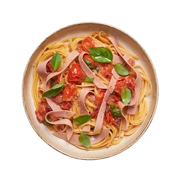
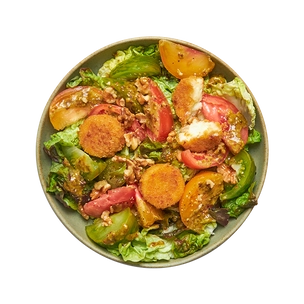
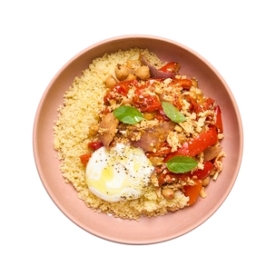
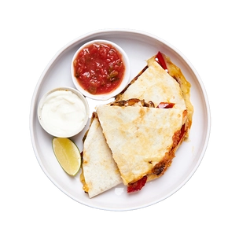
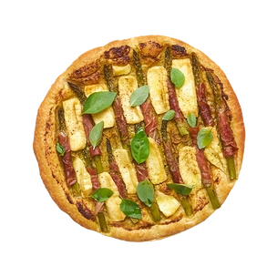
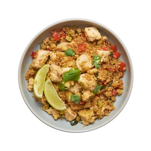
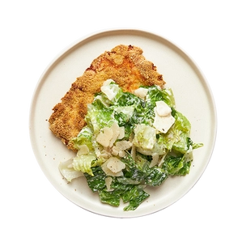

Linguine estivales au jambon végétal
Enroulez votre fourchette dans ce savoureux plat de pâtes veggie !
Salade de camemberts panés, tomates et pesto
Du camembert croustillant & crémeux dans une salade pleine de pep's !
Salade d'été, patate douce & oeuf

Faites le plein d'énergie avec cette salade gourmande & complète !
Tofu rôti aux tomates cerises & yaourt
Testez une nouvelle façon de préparer le tofu avec ce bowl haut en couleurs !
Quesadillas aux poivrons & champignons
Un repas rapide & rempli de fromage fondant qu'on peut manger avec les mains ? Nous on dit oui !
Tarte fine aux asperges, jambon cru & brie
C'est la saison des asperges !
Quinoa sauté au poulet, légumes & soja
Une recette équilibrée pour les sportifs en herbe... & les moins sportifs aussi !
Poulet pané & salade césar
Une escalope panée + une salade & sa sauce onctueuse = UN DÉ-LI-CE !